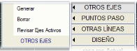
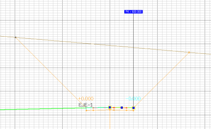
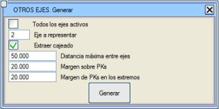
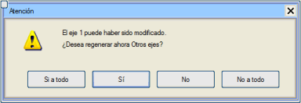
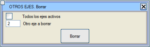

| |
|
KIRMIZI KOT: DİĞER EKSENLER
|
Bu araç sayesinde, üzerinde bulunduğumuz eksenin boykesitinde diğer eksenlerle olan enkesit kesişimini gösterebiliriz. Bu araç (Oluştur), kesilen eksen bir tünel kesitindeyse kaplama ve destek yüzeyleri gibi veya bu kesitleri kestiğimizde boru hatlarının iç ve dış yüzeyleri gibi diğer eksenin kesitinde temsil edilen çeşitli yüzeyleri gösterme yeteneğine sahiptir. 
Duvar, Pabuç, Pabuç Kazısı yüzeylerine sahip kesitleri ve Duvar+Döşeme kesitiyle tanımlananları temsil etmek mümkündür. Boykesit ekranında, Diğer Eksenin platform kenarları ile mevcut eksenin kırmızı kotu arasındaki kot farkını gözlemleyebiliriz. 
Tüm aktif eksenler kutucuğu aracılığıyla, mevcut eksenin boykesitinde tüm aktif eksenlerin enkesit kesişimlerini temsil edebilirsiniz. Platform Kazısını Çıkar seçeneği ile program, dolgu dış kaplama yüzeyleri gibi diğer eksenlerin enkesitinin geri kalan yüzeylerini temsil eder. Bu kutucuk etkinleştirilmezse, kesişim sadece platformla olur. Eğer Diğer Eksen bir otoyol ise, platformun iç noktalarının gabarileri de etiketlenir (kod -11). Bir eksenin kendisiyle kesişiminin temsili mümkündür. Diğer Eksen bir Demiryolu kesiti olduğunda, ray başlarının konumları temsil edilir ve mevcut eksenin kırmızı kotuyla olan kot farkları etiketlenir. Ayrıca, raylar ve traversler de temsil edilir. Bunlar, Diğer Eksenlerin çizimi etkinleştirildiğinde boykesit çiziminde de temsil edilecektir: Boykesit->Çizimler-> Boykesit->.gui Düzenle->Arazi->DİĞER EKSENLER,...->DİĞER EKSENLER: Çiz. Program, Kırmızı Kotlar menüsüne girildiğinde, ilgili eksenlerin .vol dosyasının daha sonra değiştirilip değiştirilmediğini veya Kırmızı Kotlar menüsünün kendi iletişim kutusundan eksen değiştirip değiştirmediğimizi kontrol eder. Bu durumda bir uyarı gösterilir ve bu diğer ekseni veya aktif eksenlerinkini yeniden oluşturma imkanı verilir. Yapılandırma iletişim kutusunda bu seçenek etkinleştirilebilir veya devre dışı bırakılabilir. Diğer Eksenlerle kesişimleri yeniden oluştururken programa şunları belirtebiliriz:

Sil seçeneği ile tek bir ekseni veya tüm aktif eksenleri silebiliriz: 
Son olarak, Aktif Eksenleri Gözden Geçir seçeneği, tüm aktif eksenlerde diğer eksenlerde bir değişiklik olup olmadığını kontrol eder ve öyleyse yeniden yapar. İşlem, o anda üzerinde çalıştığı ekseni gözden geçirmeyi bitirdiğinde [Esc] tuşuna basılarak kesilebilir. Not: Mevcut kırmızı kotun temsili için kullanıcı, başka bir eksene yakalamadan yararlanabilir. |